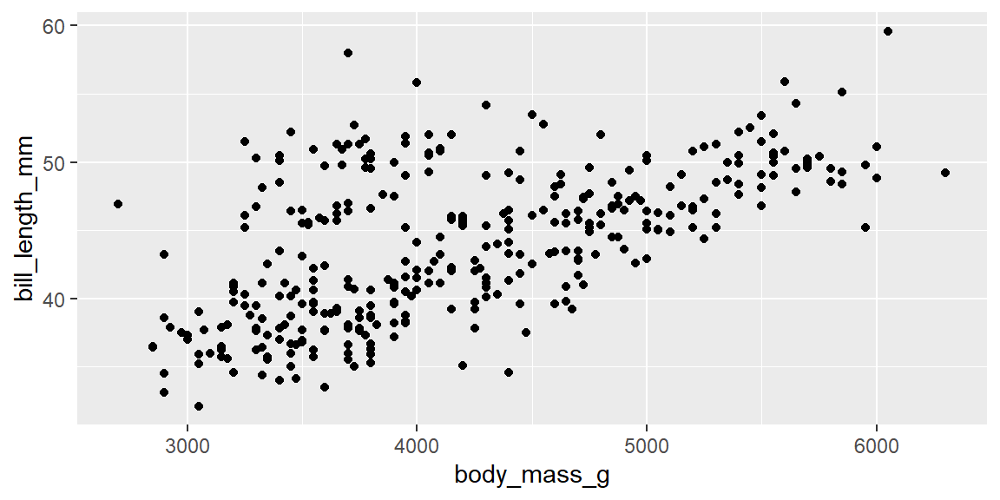
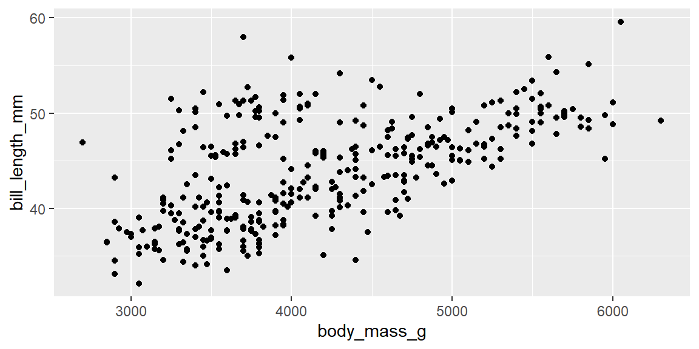

Code
ggplot(penguins) +
aes(x = body_mass_g, y = bill_length_mm) +
geom_point()Warning: Removed 2 rows containing missing values (`geom_point()`).
Code and its output are both displayed in the rendered document by default.
ggplot(penguins) +
aes(x = body_mass_g, y = bill_length_mm) +
geom_point()Warning: Removed 2 rows containing missing values (`geom_point()`).
You can tweak the defaults by adding to the YAML header at the very top. Let’s try this example: for some documents, you might want to hide all the code.
–> Go to the YAML header and specify (copy and paste):
execute:
echo: false(Note the two spaces before echo.)
Render the file.
You can also override the document level settings. For example, you might want to selectively render some code chunks.
–> Go to the fig-scatterplot chunk, and add #| echo: true. Render. The code is now included in the fig-scatterplot chunk.
You can allow people to view the code only if they want to. Try the code-fold option.
–> Remove the execute: echo option. Add in the code-fold option under html, like so:
---
title: "More about Quarto"
format:
html:
code-fold: true
---–> Render/save again, and see the Code widgets for each chunk.
Quarto gives you the ability to improve the appearance and accessibility of your plots. We can change the size of our plot with fit-width and fig-height, provide a caption with fig-cap , add alt text for accessibility with fig-alt.
–> Copy and paste over the existing code-block options into the plot above.
#| label: fig-scatterplot
#| fig-cap: "Body mass and bill length for penguins"
#| fig-alt: "Scatterplot of body mass vs. bill length for penguins. The plot displays a positive relationship between body mass and bill length."
#| fig-width: 6
#| fig-height: 3You can reference the plot in the text:
Figure 1 displays a positive relationship between body mass and bill length.
You can also include inline code (code not inside a code chunk) by surrounding your code with backticks and prefacing the code with r.
–> Include inline code below. Replace the … with your code.
–> Code: nrow(penguins). Include backticks and preface the code with r. You can also use the dropdown: Format > Code for the backticks.
There are 344 penguins in the dataset.
–> Render.
The sentence will display the calculated number of observations.
If your code is a bit longer, you can also create an object in a code chunk with echo: false, and call that object in the inline code.
The average bill length of the penguins in our data is 43.92.
If you have code chunks that will take a long time to compute, you can cache the results. You can do this globally with a YAML header:
execute:
cache: trueOr you can cache individual code chunks:
#| cache: trueYou can add in equations using LaTeX math.
–> Go to Insert in the toolbar, LaTeX Math, then Display Math. Type in y = x^2.
\[ y = x^2 \]
It is easy to include citations in Quarto. You can either connect Quarto to Zotero, import a .bibtex file that has a list of citations, import citations by their DOI, and a few other methods.
–> Go to Insert in the Toolbar, Select Citation, Select From DOI on the left and copy-and-paste the DOI 10.5281/zenodo.3960218 in the search bar and hit Search. Then, select the found reference, and Insert it into your document, below (before the period). Render.
We are using the Palmer Penguins dataset (Horst, Hill, and Gorman 2020).
Notice the YAML header added:
#| bibliography: references.bibAnd we now have the references.bib file in our project directory.
We can do a lot to fine tune our document. There are so many options here that we can’t cover them all. Let’s just do just a couple of simple changes to our document. We will add a Table of Contents and change the Theme.
–> Add this to the YAML header.
toc: true
number-sections: true–>Now add a theme to change the look and style of the document. Find more themes.
format:
html:
theme: quartz–> Render.
Finally, let’s look at how to make Quarto documents from scratch, including Presentations and PDFs.
–> Go to File…New File…Quarto Presentation.
–> Go to File…New File…Quarto Document…PDF.
Note that PDF output requires a LaTeX installation, like tinytex.
You can install with the following command, in the Terminal.
quarto install tool tinytex